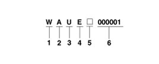
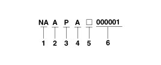

Transaxle Number
Transaxle Number
Manual

1. Model
- W : M6CF3-1
2. Production year
- A : 2010, B : 2011, C : 2012.
3. Plant of production
- U : Ulsan
4. Final gear ratio
- E : 4.188
5. Spare
6. Transaxle production sequence number
- 000001 - 999999
Automatic

1. Model
- NA : A6GF1
2. Production year
- A : 2010, B : 2011, C : 2012.
3. Gear ratio
- P : 3.065
4. Detailed classification
- A : Nu 1.8 MPI
5. Spare
6. Transaxle production sequence number
- 000001 - 999999